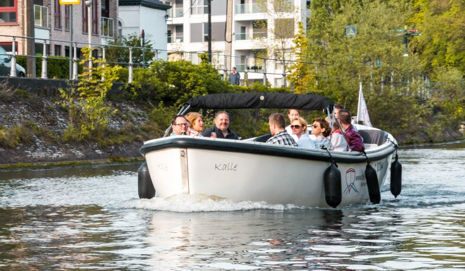
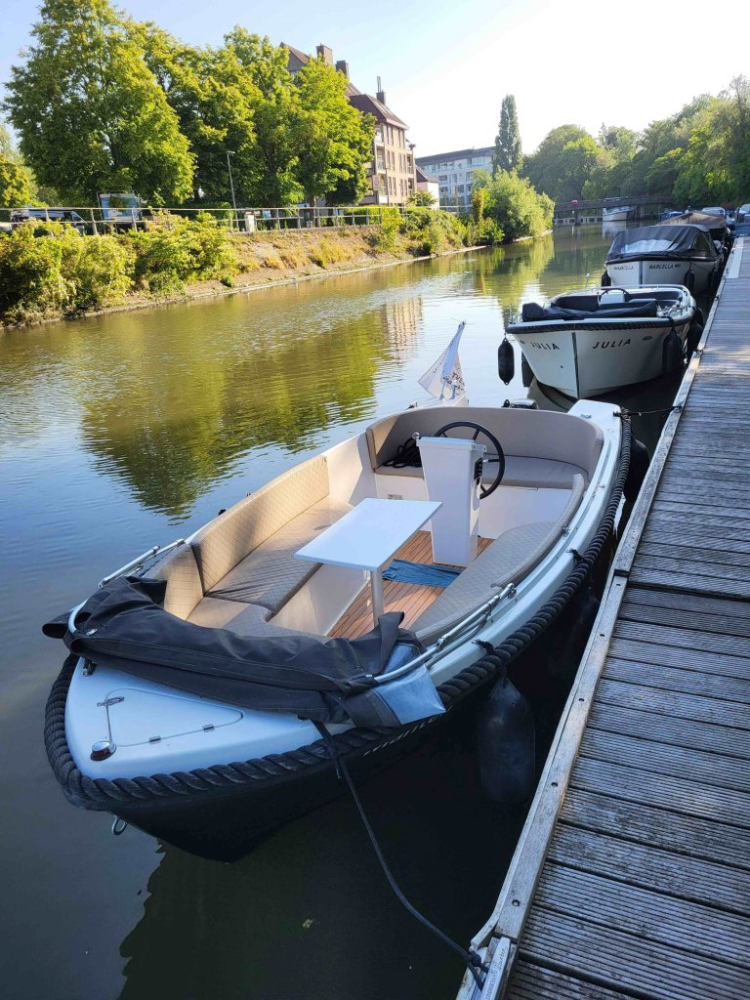
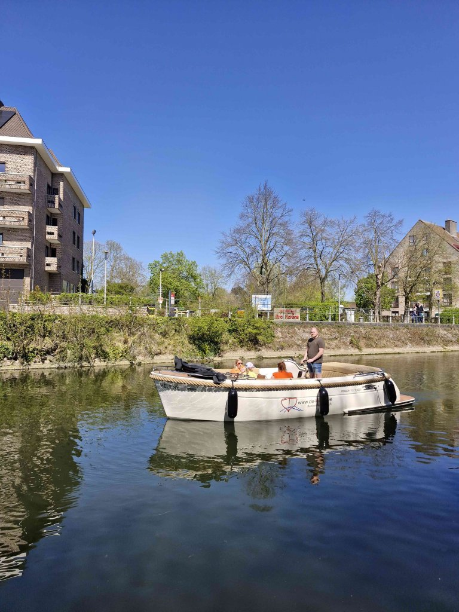
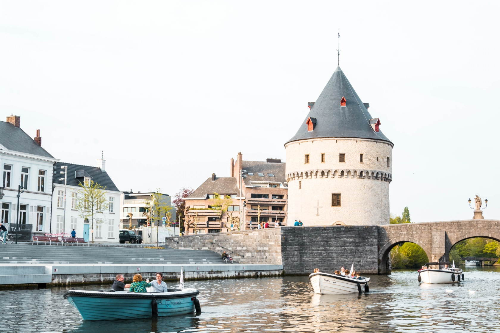

12 personen
Kalle
Stoere reddingssloep met ruime achterbank, luxe kussens en boegschroef.
Vanaf €180Vertrek aan de Broeltorens · Kortrijk
Huur een comfortabele sloep voor vrienden, familie of collega’s en vaar rustig door de Leiestreek. Geen vaarbrevet nodig, wel een unieke dag op het water.
Bootverhuur De Keper
Deze preview zet de beleving centraal: foto’s van Kortrijk, duidelijke bootkeuze, prijzen en snelle contactknoppen. Zo voelt de website meteen als een uitnodiging om te vertrekken.
Kies je boot

Stoere reddingssloep met ruime achterbank, luxe kussens en boegschroef.
Vanaf €180
Ruime pontonboot met comfortabele banken, hifi, koelkast en veel plaats.
Vanaf €190
Klein maar fijn, ideaal voor een compacte tocht met luxe kussenset.
Vanaf €130
Comfortabele boot met ruime zitbanken en ingebouwde koelkast.
Vanaf €160
Luxueuze moderne look, ingebouwde koelkast en ideaal voor acht personen.
Vanaf €150
Modern, ruim en comfortabel met koelkast en boegschroef.
Vanaf €160Praktisch

Met de sloepen kan je de Leie afvaren tot aan de sluizen in Harelbeke en Menen. Liever volledig ontspannen? Dan kan je op voorhand een schipper bijvragen.
Capaciteit en vanafprijs staan meteen duidelijk per boot.
Ideaal voor mensen die onderweg op hun gsm een uitstap plannen.
Grote beelden maken van huren meteen een ervaring.
Klaar om te vertrekken?
Bel of mail De Keper voor vragen of reservaties.